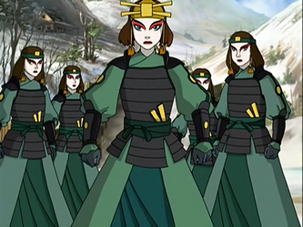

Suki was the eldest member and leader of the all-female Kyoshi Warriors of the Earth Kingdom's Kyoshi Island. Having begun her training when she was only eight years old, she was well-respected by her fellow warriors for her leadership and combat skills. When Team Avatar arrived on Kyoshi Island, Suki and a few other Kyoshi Warriors captured them, thinking they were Fire Nation spies, but released them and befriended them after  realizing Aang was the Avatar. Inspired by the outsiders for helping save their village from Prince Zuko, she and the other Kyoshi Warriors left the island to help the Earth Kingdom fight against the Fire Nation. During their journey, she protected the Avatar's lost sky bison, Appa, from falling into the enemy's hands, but she and the other Kyoshi Warriors were defeated by Princess Azula, Mai, and Ty Lee.
Imprisoned in the Fire Nation, Suki was placed within a high-security prison. It was only by good fortune that Sokka and Zuko infiltrated the facility looking for Sokka's captured father, Hakoda, instead finding her. Freed from captivity, Suki later helped Aang and friends defeat the Fire Nation and eventually reunited with her fellow Kyoshi Warriors.